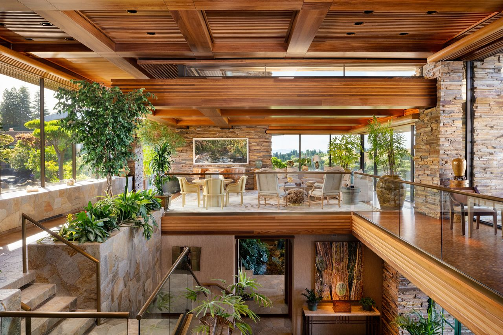

Fallingwater, weekend residence near Mill Run, southwestern Pennsylvania, that was designed by American architect Frank Lloyd Wright for the Kaufmann family in 1935 and completed in 1937. The house’s daring construction over a waterfall was instrumental in reviving Wright’s architecture career and became one of the most famous 20th-century buildings. The residence opened as a museum in 1964.
Edgar J. Kaufmann, Sr., a department store magnate, and his wife, Liliane, commissioned Wright to design a weekend retreat on the family’s land near the former Bear Run community southeast of Pittsburgh. Kaufmann had been introduced to Wright by his son, Edgar, in 1934, when the latter participated in Wright’s Taliesin Fellowship, a training program for architects and artists. Wright was 67 at the time of the meeting, with few commissions in the midst of the Great Depression. His career was seemingly near retirement—the early success of his Prairie style residences in the first decade of the 1900s had abated following the negative publicity of his personal life. Wright’s design for Fallingwater, however, proved that he still maintained a bold vision for architecture.
